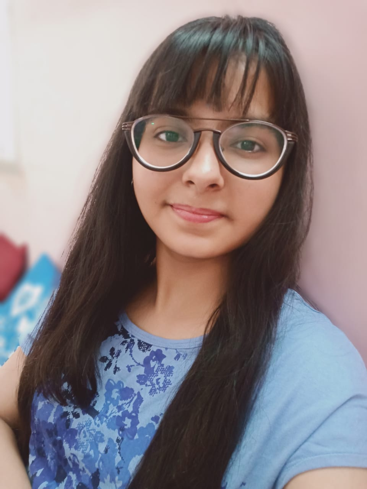

|  |
I am from Birsinghpur Pali.
I like to explore things and create new things.
My interest domains are designing, web development, competitive programming, ML.
"Learning to grow and growing to learn."
My other interests are painting, dancing, photography.
+91 9636089854
https://aceiiitnmovienight.wordpress.com/Linkedin:https://www.linkedin.com/in/bharti-vaswani-835347202
B.Tech in Computer Science Engineering
December 2020-May 2024
SGPA:8.09
Courses:Calculus, Computer Programming, Elements of Electrical Engineering,
Applied Science, Electronic Devices and Circuits.
Design Team Member
Febraury 2021-Present
Designed Poster for Ace E-Summit 2k21